Кварцевый резонатор и кварцевый генератор
Кварц — это один из самых распространенных минералов в земной коре. Его доля составляет около 60%. Кварц состоит из кремния, но в связке с кислородом. Его формула SiO2.
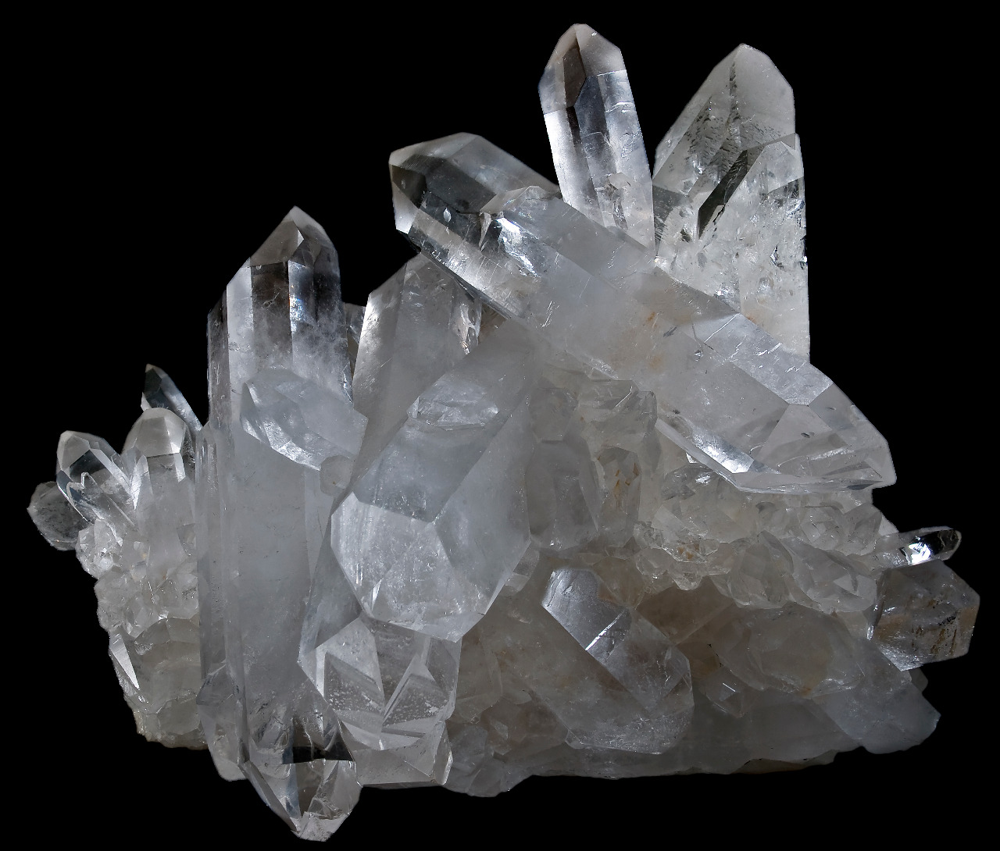
Рис. 1 - Кристаллы кварца
Еще в XIX веке, два брата Кюри обнаружили интересное свойство некоторых твердых кристаллов генерировать ЭДС при сжатии или растяжении такого вещества. Но существует и обратный эффект, то есть при подаче напряжения мы можем или растянуть вещество, либо сжать. На самом же деле, невооруженным глазом это практически не заметно. Такой эффект называется пьезоэффектом. А такие вещества называются пьезоэлектриками.
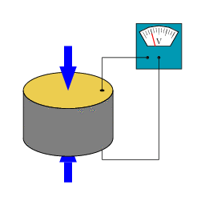
Рис. 2 - Пьезоэффект
ЭДС в пьезоэлектриках возникает только в процессе сжатия или растяжения.
Кристаллы кварца тоже обладают пьезоэффектом и способны также вырабатывать ЭДС или деформироваться (изгибаться, изменять форму) под воздействием электрического тока.
Кварцевый резонатор
Резонатор — (от лат. resono — звучу в ответ, откликаюсь) — это система, которая способна совершать колебания с максимальной амплитудой, то есть резонировать, при воздействии внешней силы определенной частоты и формы. Получается, кварцевый резонатор в электронике, а в народе просто «кварц», — это радиоэлемент, который способен резонировать, если на него подать переменный ток определенной частоты и формы.
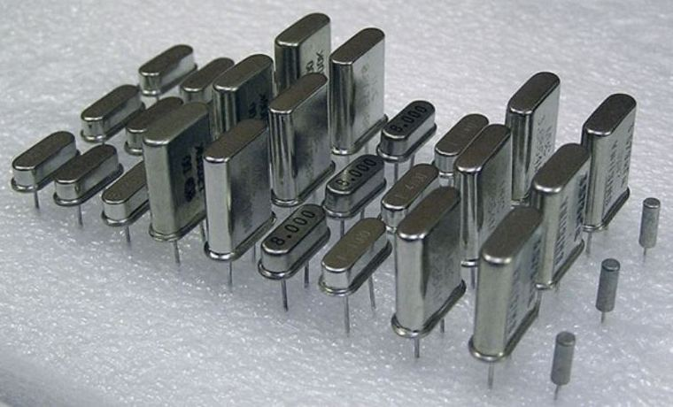
Рис. 3 - Кварцевые резонаторы
Разобрав кварцевый резонатор, можно увидеть сам кристалл кварца.
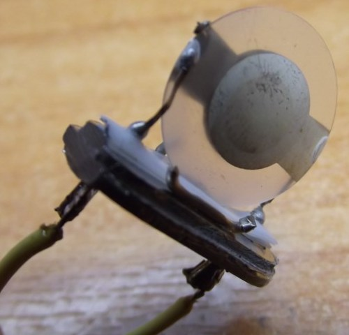
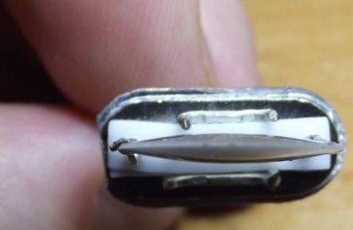
Рис. 4 - Прозрачный кристалл кварца, размещенный между двумя металлическими пластинами
В маленьких кварцах используются тонкие прямоугольные пластинки кварца.
Здесь правило такое: чем больше толщина пластинки, тем ниже рабочая частота кварца. Поэтому самые большие частоты, на которые делают кварцы, составляет не более 50 МГц, так как пластинка получается очень тонкая, что создает трудности при ее изготовлении, да и держать ее как-то надо в корпусе не поломав. Можно выжать из кварца частоту и до 200 МГц, но работать такой кварц будет на обертоне.
Обертоны, или как еще их называют, моды или гармоники — это кратные частоты, выше основной частоты кварца. С помощью фильтров гасят основную частоту кварца и выделяют обертоновую. В кварцевом резонаторе в режиме обертонов используют нечетные обертоны. Если основная частота кварца F — это первый обертон, то его рабочие обертоны будут как 3F, 5F, 7F, 9F. Стоит также отметить, что амплитуда обертона убывает с ростом его частоты, поэтому далее 9 обертона смысла брать уже нет, так как выделять амплитуду маленького сигнала очень трудно.
Пример: возьмем кварц с частотой в 10 МГц. Тогда мы можем возбудить его на обертонах в 30 МГц (третий обертон), в 50 МГц (пятый обертон), в 70 МГц (седьмой обертон) и на крайняк, в 90 МГц (девятый обертон).
Схема, которая возбуждает кварц на обертонах, сложная и не очень надежная, так как во-первых, надо «давить» главную частоту кварца и выделять обертоновую, а во-вторых, кварц может возбудиться в режиме случайных колебаний. На практике все-таки делают схемы с умножением главной частоты кварца, что намного проще и надежнее.
Кварц является диэлектриком. А что будет если тонкий диэлектрик разместить между двумя металлическими пластинами? Получится конденсатор! Конденсатор получается очень маленькой емкости, так что замерить его емкость вряд ли получится. Поэтому на схемах его показывают как прямоугольный кусочек кристалла, заключенного между двумя пластинками конденсатора (рис. 5).
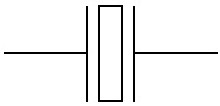
Рис. 5 - Условное графическое обозначение кварцового резонатора
Очень много мифов ходит по интернету именно о кварцевом резонаторе. Самый ходовый миф гласит так: если подать постоянное напряжение на кварцевый резонатор, он будет выдавать переменное напряжение с частотой, указанной на нем. Кристалл кварца просто сожмется или разожмется. Некоторые вообще до сих пор думают, что кварц сам по себе выдает переменный ток.
Для того, чтобы понять принцип работы кварцевого резонатора, надо рассмотреть его эквивалентную схему.
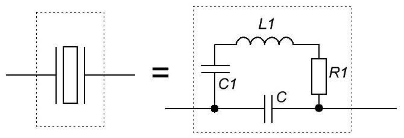
Рис. 6 - Эквивалентная схема кварцового резонатора
С — это собственно емкость между обкладками конденсатора. То есть если убрать кристалл кварца, то останутся две пластины и их выводы. Именно они и обладают этой емкостью.
С1 — это динамическая емкость самого кристалла. Динамическая — это значит проявляется при работе кварца. Ее значение несколько фемтоФарад. Фемто — это 10-15 !
L1 — это динамическая индуктивность кристалла. Она может достигать несколько тысяч Генри!
R1 — динамическое сопротивление, при работе кварца может достигать от нескольких Ом и до нескольких КилоОм
Каждый кварц имеет разные частоты последовательного и параллельного резонанса. Понятие слова «возбуждение» в данном случае говорит о том, что мы из кварца и некоторых радиодеталек делаем схемку, с помощью которой получаем частоту от кварца, которая на нем написана.
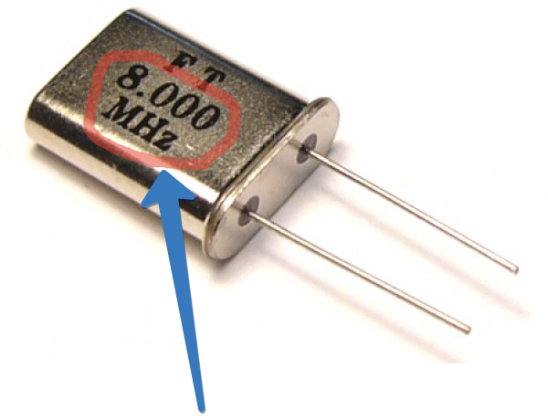
Рис. 7 - Маркировка частоты последовательного резонанса кварцового резонатора
Это говорит нам о том, что на частоте последовательного резонанса мы можем возбудить этот кварц на частоте 8 МГц.
Здесь также есть еще одно правило: если частота маркируется в целых числах в килогерцах — это работа на основной гармонике, а если в мегагерцах через запятую — это обертоновая гармоника.
Например:
РГ-05-18000кГц — резонатор для работы на основной частоте,
РГ-05-27,465МГц — для работы на 3-ем обертоне.
Кварцевый генератор
Что такое генератор? Генератор — это по сути устройство, которое что-то производит. В электронике очень часто можно услышать словосочетание «генератор электрической энергии, генератор частоты, генератор функций» и тд.
Кварцевый генератор представляет из себя генератор частоты и имеет в своем составе кварцевый резонатор. Теперь, думаю, не будете путать кварцевый резонатор с генератором. В основном кварцевые генераторы бывают двух видов: те, которые могут выдавать синусоидальный сигнал и те, которые выдают прямоугольный сигнал. Чаще всего используется последний.
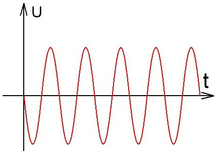
Рис. 8 - Синусоидальный сигнал
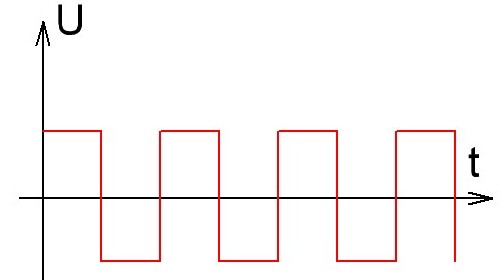
Рис. 9 - Прямоугольный сигнал
Принцип работы кварцевого генератора такой: кристалл кварцевого резонатора заставляют вибрировать, прикладывая к нему переменное напряжение. Амплитуда таких колебаний достигает максимума при совпадении частоты приложенного переменного напряжения с резонансной частотой кварцевого резонатора.
Плюсы кварцевых генераторов частоты — это высокая частотная стабильность. В основном это 10-5 — 10-6 от номинала или, как часто говорят, ppm (от англ. parts per million) — частей на миллион, то есть одна миллионная или числом 10-6. Отклонение частоты в ту или иную сторону в кварцевом генераторе в основном связано с изменением температуры окружающей среды, а также со старением кварца. При старении кварца, частота кварцевого генератора стает чуточку меньше с каждым годом примерно на 1,8х10-7 от номинала. Если, скажем, я взял кварц с частотой в 10 МегаГерц ( 10 000 000 Герц) и поставил его в схему, то за год его частота уйдет примерно на 2 Герца в минус.
В настоящее время кварцевые генераторы выпускают в виде законченных модулей. Некоторые фирмы, производящие такие генераторы, достигают частотной стабильности до 10-11 от номинала!
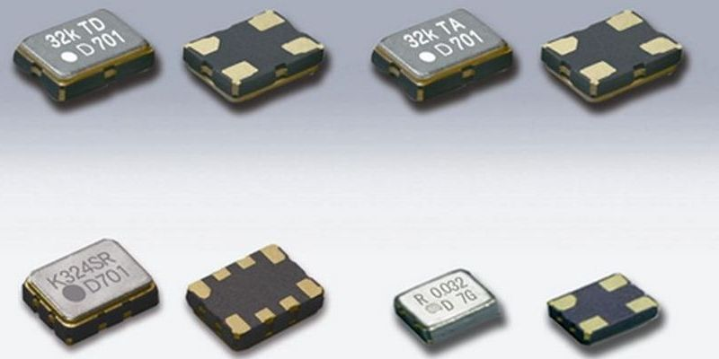
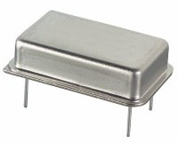
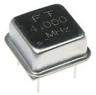
Рис. 10 - Модули кварцевых генераторов
Такие модули кварцевых генераторов в основном имеют 4 вывода.
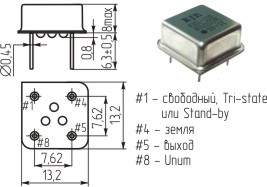
Рис. 11 - Распиновка квадратного кварцевого генератора
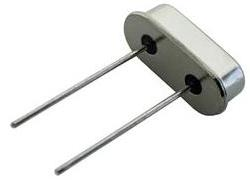 |
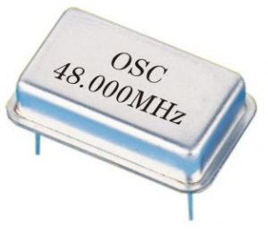 |
| Кварцевый резонатор | Кварцевый генератор |
Рис. 12 - Кварцевый резонатор и кварцевый генератор
Разновидности кварцевых резонаторов
По типу корпуса:
- Для объемной установки (цилиндрические и стандартные).
- Для поверхностного монтажа.
По материалу корпуса:
- Металлические.
- Стеклянные.
- Пластиковые.
По форме корпуса:
- Круглые.
- Прямоугольные.
- Цилиндрические.
- Плоские.
По количеству резонансных систем:
- Одинарные.
- Двойные.
По защите корпуса:
- Герметичные.
- Негерметизированные.
- Вакуумные.
По назначению:
- Фильтровые.
- Генераторные.
Важным свойством кварцевых резонаторов для успешной работы является их активность. Но она не определяется только собственными свойствами. Вся электрическая схема влияет на его активность.
В резонаторах, используемых в фильтрах, применяются такие же виды колебаний, как и в генераторных резонаторах. В фильтрах используются 2-х и 4-х электродные вакуумные резонаторы. В многозвенных фильтрах чаще всего применяются 4-х электродные модели, так как они более экономичные.
Как проверить кварцевые резонаторы
Для проверки резонатора на его работоспособность, собирают специальный простой тестер, помогающий проверить кроме работы резонатора, еще и его частоту резонанса. Схема такого устройства похожа на кварцевый генератор, собранный на транзисторе.
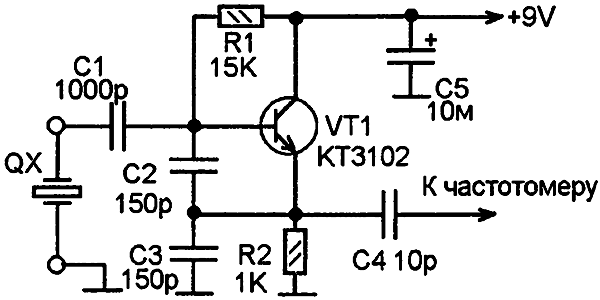
Рис. 13 - Схема для проверки кварцевого резонатора
Подключив резонатор между отрицательным полюсом и базой транзистора через защитный конденсатор, с помощью частотомера измеряют частоту резонанса. Такая схема подходит для настройки контуров колебаний. При включенной схеме исправный резонатор создает колебания. В результате на эмиттере транзистора возникает переменное напряжение с частотой резонанса тестируемого резонатора.
Если к выходу тестера подключить частотомер, то можно измерить частоту резонанса. При стабильной частоте и небольшом нагревании корпуса резонатора паяльником частота не должна значительно изменяться. Если частотомер не обнаруживает возникновение частоты, либо она сильно изменяется или имеет большие отличия от номинала, то резонатор негоден и требует замены.
При использовании такого тестера для настройки контуров, емкость С1 обязательна. Но при проверке исправности резонаторов ее присутствие в схеме не требуется. При этом колебательный контур просто подсоединяют на место кварцевого резонатора и тестер начинает создавать колебания таким же образом.
Тестер, выполненный по рассмотренной схеме, хорошо зарекомендовал себя на частоте 15-20 МГц. Для других интервалов можно найти другие схемы, собранные на микросхемах и других компонентах.
Сфера применения
Благодаря стабильности параметров кварцевых резонаторов, они нашли широкое использование в различных областях.
- Многие измерительные устройства работают на основе таких резонаторов, при этом точность измерений очень высока.
- Пьезокварцевая пластина применяется в качестве резонатора в морском эхолоте для выявления объектов, расположенных в воде, исследования дна моря, определения нахождения отмелей и рифов. Это дает возможность изучения жизни в океане в глубоководных районах, а также создания точных карт морского дна.
- Кварцевые резонаторы нашли широкую популярность в кварцевых часах, так как частота колебаний кварцевой пластины практически не зависит от температуры, и имеет малое относительное изменение частоты.
Кварцевые резонаторы расширяют свою сферу использования, потребность в них постоянно увеличивается, так как они обладают повышенными метрологическими параметрами, эффективностью работы.
Источники
ruselectronic.com - Кварцевый резонатор и кварцевый генератор
electrosam.ru - Кварцевые резонаторы. Виды и применение. Устройство и работа